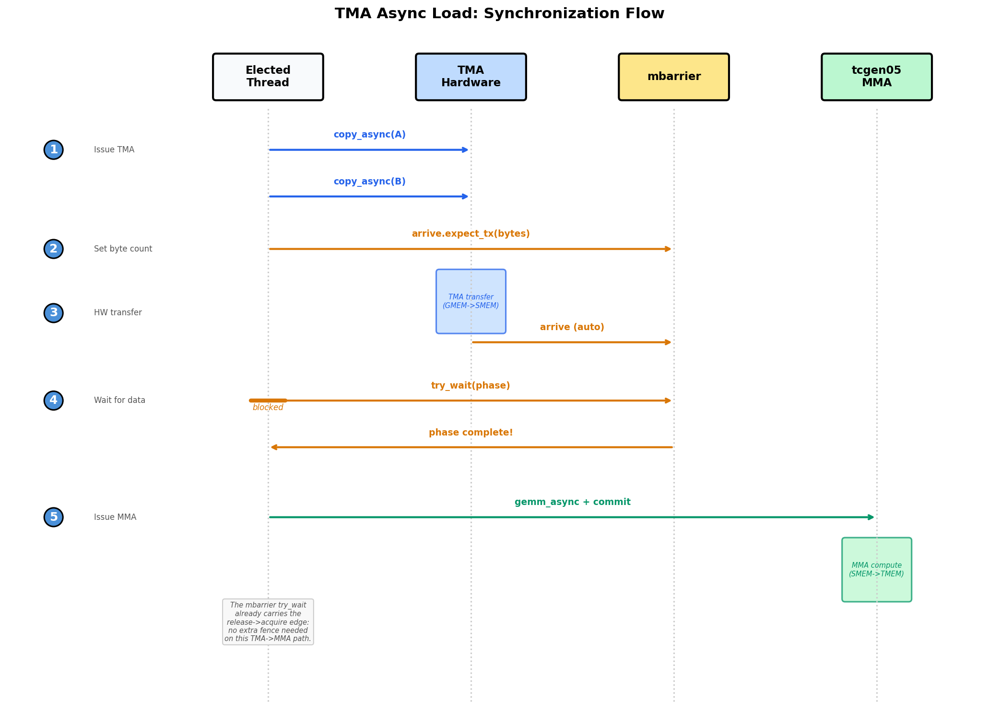
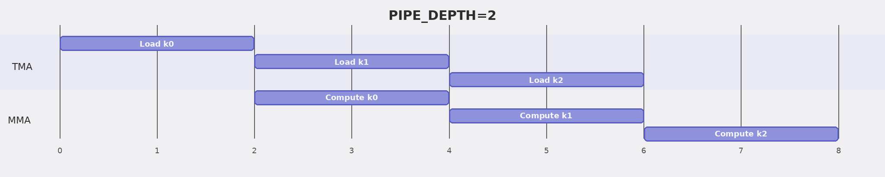

用 TMA 为 GEMM 建立流水线¶
概述
- 基础 GEMM 在轮流执行上浪费时间（拷贝一个分块、计算、拷贝下一个），而这两件事本可以同时进行。
- 第 4 步切换到 TMA 异步加载，第 5 步对 SMEM 双缓冲并预取（PIPE_DEPTH=2）；完整的加载/计算重叠随第 7 步的线程束特化到来，第 6 步通过分块调度器使核函数成为持久化核函数。
- 目标是在 Tensor Core 啃当前分块的同时加载下一个分块。
Tensor Core 是芯片上最昂贵的单元，而上一章那个正确的分块 GEMM 让它在大部分时钟周期里闲置。核函数轮流工作：线程把一个分块拷入共享内存，Tensor Core 啃完它，线程拷入下一个分块，Tensor Core 干等。每个阶段都因前一个阶段而停顿，尽管加载下一个分块和在当前分块上计算使用的是完全独立的硬件，本可以同时运行。弥合这一差距并不需要新的数据通路；分块、布局和数学都已经正确。需要改变的是工作何时发生以及由谁调度。本章让分块数据通路保持原样，直接攻击这种闲置。
我们分三个增量步骤到达那里，而在开始之前了解目的地会有帮助。在第 4 步，我们把 GMEM 与 SMEM 之间的大量搬运交给 TMA，让专用拷贝硬件而非线程来搬运分块。在第 5 步，我们加入一个两阶段的软件流水线，给下一个 K 分块一个落地之处，同时当前分块仍在被乘。在第 6 步，我们把启动改造成由分块调度器驱动的持久化核函数，从而摊销每分块的设置开销，并让我们选择一个保持操作数热态的分块顺序。贯穿始终，SMEM、TMEM 和寄存器布局与上一章保持完全一致。唯一真正的新想法是硬件单元之间的异步交接：让一个引擎领先于另一个引擎运行，而不是让它们齐步走。
第 4 步：TMA 异步加载¶
我们的第一个动作是把拷贝本身移出关键路径。想想 CTA 在第 1-3 步里在做什么：它的每个线程计算地址并发出加载指令，除了把分块搬进 SMEM 之外没有别的目的。这是花在管道上而非数学上的指令带宽（bandwidth）。第 4 步用 TMA 替换同步的 Tx.copy，在 TMA 中单个线程发出一条命令，TMA 引擎自行完成整块分块的搬运。从这里起，示例在完整的 M=N=K=4096 规模下运行，而非第 1-3 步的小规模，它们的端到端耗时出现在 chap_gemm_advanced 末尾的端到端结果表中。
本步骤所改变的内容：调度 - 作用域：不变，单个线程束组。 - 布局：不变，相同的 SMEM/TMEM/寄存器分块。 - 调度：GMEM → SMEM 加载从同步
Tx.copy迁移到 TMA 引擎。
TMA 发出模式¶
第 4 步的唯一改动是用 TMA 加载替换同步分块拷贝，因此值得仔细看看那次加载是如何发出的。对源的编辑只有几行，但这些行背后的执行模型在本质上是不同的。同步的 Tx.copy 是 CTA 线程用自己指令自己做的工作；TMA 拷贝是一个线程发出的命令，之后 TMA 硬件完成所有搬运。把两者并排看是有价值的。
之前（第 3 步）：全部 128 个线程参与拷贝，然后 cta_sync 使共享内存写入可见：
Tx.cta.copy(Asmem[:, :], A[m_st:m_st+BLK_M, i*BLK_K:(i+1)*BLK_K]) # all 128 threads
Tx.cta.copy(Bsmem[:, :], B[n_st:n_st+BLK_N, i*BLK_K:(i+1)*BLK_K])
T.cuda.cta_sync()
之后（第 4 步）：一个线程发出 TMA 加载，mbarrier 跟踪硬件搬运何时完成：
tid = warp_id * 32 + lane_id # 0..127 within the warpgroup
if tid == 0: # exactly one thread starts TMA
Tx.copy_async(Asmem, A[...], dispatch="tma")
Tx.copy_async(Bsmem, B[...], dispatch="tma")
T.ptx.mbarrier.arrive.expect_tx(tma_bar, byte_count) # bytes expected from TMA
T.ptx.mbarrier.try_wait(tma_bar, phase) # wait before MMA reads SMEM
注意加载以 tid == 0 为门控，而非 elect_sync()，而这一区别比看起来更重要。elect.sync 是每个线程束选出一个活跃通道（lane），而一个线程束组有四个线程束，所以 elect_sync() 实际上会让四个线程进入加载协议。问题在于该协议要向 mbarrier 宣告预期的字节数，而它必须恰好宣告一次；四次宣告会破坏计数，等待也永远无法正确释放。按线程束组范围 id 精确选出一个线程才是干净的避免方式。
对加速来自何处要诚实。第 4 步在每次 TMA 加载之后仍然等待，所以我们尚未把加载与计算重叠；那是第 5 步的工作。此处的收益纯粹来自数据搬运路径的改变：
Tx.copy使用 CTA 线程来计算地址并发出加载/存储指令。- TMA 使用一条发出的命令来启动一次硬件分块搬运。地址生成、合并访问和交换（swizzle）由 TMA 描述符（descriptor）描述并由 TMA 引擎执行。
所以即便第 4 步仍在每次加载上阻塞，它最终还是更快了。TMA 吸收了大量搬运，把 CTA 线程从花指令带宽来回搬分块中解放出来，仅此一项就足以推动指针。
TMA 加载与存储的同步¶
我们已经看到 TMA 拷贝如何发出；故事的另一半是知道它何时完成。切换到 TMA 同时改变了两件事：谁启动一次拷贝，以及代码如何知道它完成了。前者从代码中一目了然；后者容易被忽略，而弄错它会给你一个静默的正确性 bug 而非崩溃。在 Tx.cta.copy 中，CTA 线程一起做拷贝，随后的 cta_sync() 就足以知道它完成了。在 TMA 中，一个被选中的线程发出 Tx.copy_async(..., dispatch="tma")，引擎按自己的节奏执行搬运，并通过 mbarrier 发出完成信号。
这正是为什么 cta_sync() 不再足够。cta_sync() 只等待 CTA 自己的线程，只对它们的共享内存写入排序；它对在途的 TMA 搬运一无所知，因此会在分块仍在到达时欣然返回。修复办法是让完成显式化：对于 TMA 加载，被选中的线程首先告诉 mbarrier 期望多少字节，然后 CTA 在任何 MMA 触碰 SMEM 分块之前在那个 mbarrier 上等待。下图端到端追踪了那次握手。

上图孤立出加载侧握手：一个被选中的线程启动 TMA，mbarrier
计数预期字节，MMA 在释放之上等待后才读取 SMEM。图中
"被选中线程" 指启动 TMA 的那个被选中线程，在我们的代码中是
tid == 0 线程，而非 elect_sync() 选出的通道。
那么，把加载路径拼起来：被选中的线程发出两次 copy_async 调用，随后跟一个 arrive.expect_tx(total_bytes)，其中字节数恰好是 mbarrier 应当等待的数据量。一旦引擎搬运了那么多字节，匹配的 mbarrier.try_wait(phase) 就释放，只有到那时 SMEM 分块才安全地喂给 MMA。
存储侧走的是同样的硬件但等待方式不同，因此把两种协议在脑中清楚分开是有价值的：加载用 mbarrier 和字节数跟踪完成，而存储用提交组和等待组跟踪它。线程把它们的 fp16 结果写入 Dsmem 并同步之后，一个被选中的线程启动 Tx.copy_async(D[...], Dsmem, dispatch="tma")，然后 cp_async.bulk.commit_group() 加 cp_async.bulk.wait_group(0) 阻塞直到存储排空。那个等待不是可选的：Dsmem 在前一次存储排空之前不能被下一个分块复用。
与你的 agent 一起尝试：追踪第 4 步中一个 K 分块的加载和存储同步。指出哪个线程启动每条 TMA 命令，哪个 mbarrier 或提交组跟踪完成，哪个等待保护 MMA 对 Asmem 和 Bsmem 的读取，哪个等待保护 Dsmem 的复用。为什么在这里用 elect_sync() 做 TMA 加载协议的线程选择是错的？
完整核函数¶
完整核函数把 TMA 加载和存储折叠进第 3 步的结构，其余结构原封不动。导入与之前相同：
import tvm
from tvm.script import tirx as T
from tvm.script.tirx import tile as Tx
from tvm.tirx.layout import TileLayout, S, TLane, TCol, tid_in_wg
from tvm.tirx.cuda.operator.tile_primitive.tma_utils import tma_shared_layout, SwizzleMode
它包裹在 hgemm_v4(M, N, K) 中，这是我们贯穿始终遵循的模式：包裹器把依赖形状的常量和布局放在使用它们的核函数旁边。
def hgemm_v4(M, N, K):
a_type = tvm.DataType("float16")
b_type = tvm.DataType("float16")
d_type = tvm.DataType("float16")
acc_type = tvm.DataType("float32")
BLK_M, BLK_N, BLK_K = 128, 128, 64
K_TILES = K // BLK_K
F16_SIZE = 2
A_layout = tma_shared_layout(a_type, SwizzleMode.SWIZZLE_128B_ATOM, (BLK_M, BLK_K))
B_layout = tma_shared_layout(b_type, SwizzleMode.SWIZZLE_128B_ATOM, (BLK_N, BLK_K))
D_layout = tma_shared_layout(d_type, SwizzleMode.SWIZZLE_128B_ATOM, (BLK_M, BLK_N))
@T.prim_func
def kernel(
A: T.Buffer((M, K), a_type),
B: T.Buffer((N, K), b_type),
D: T.Buffer((M, N), d_type),
):
T.device_entry()
bx, by = T.cta_id([M // BLK_M, N // BLK_N])
wg_id = T.warpgroup_id([1])
warp_id = T.warp_id_in_wg([4])
lane_id = T.lane_id([32])
# --- SMEM allocation (now includes Dsmem for TMA store) ---
pool = T.SMEMPool()
tmem_addr = pool.alloc((1,), "uint32")
tma_bar = pool.alloc((1,), "uint64", align=8)
mma_bar = pool.alloc((1,), "uint64", align=8)
pool.move_base_to(1024)
Asmem = pool.alloc((BLK_M, BLK_K), a_type, layout=A_layout)
Bsmem = pool.alloc((BLK_N, BLK_K), b_type, layout=B_layout)
Dsmem = pool.alloc((BLK_M, BLK_N), d_type, layout=D_layout)
pool.commit()
# --- Barrier + TMEM init ---
if warp_id == 0 and lane_id == 0:
T.ptx.mbarrier.init(mma_bar.ptr_to([0]), 1)
T.ptx.mbarrier.init(tma_bar.ptr_to([0]), 1)
if warp_id == 0:
T.ptx.tcgen05.alloc(T.address_of(tmem_addr), n_cols=512, cta_group=1)
T.ptx.fence.proxy_async("shared::cta")
T.ptx.fence.mbarrier_init()
T.cuda.cta_sync()
tmem = T.decl_buffer(
(128, 512), "float32", scope="tmem", allocated_addr=tmem_addr[0],
layout=TileLayout(S[(128, 512) : (1@TLane, 1@TCol)])
)
m_st = T.meta_var(bx * BLK_M)
n_st = T.meta_var(by * BLK_N)
phase_tma: T.int32 = 0
phase_mma: T.int32 = 0
# --- Inline helpers ---
@T.inline
def tma_load(k_st):
tma_config = T.meta_var({
"dispatch": "tma", "cta_group": 1,
"mbar": tma_bar.ptr_to([0])
})
Tx.copy_async(Asmem[:, :],
A[m_st : m_st + BLK_M, k_st : k_st + BLK_K],
**tma_config)
Tx.copy_async(Bsmem[:, :],
B[n_st : n_st + BLK_N, k_st : k_st + BLK_K],
**tma_config)
T.ptx.mbarrier.arrive.expect_tx(
tma_bar.ptr_to([0]),
(BLK_M * BLK_K + BLK_N * BLK_K) * F16_SIZE
)
@T.inline
def mma(accum):
Tx.gemm_async(
tmem[:, :BLK_N], Asmem[:, :], Bsmem[:, :],
accum=accum, dispatch="tcgen05", cta_group=1
)
T.ptx.tcgen05.commit(mma_bar.ptr_to([0]), cta_group=1)
# --- K-loop with TMA async ---
tid = T.meta_var(warp_id * 32 + lane_id)
for k in range(K_TILES):
k_st = T.meta_var(k * BLK_K)
# Single thread issues TMA load
if tid == 0:
tma_load(k_st)
# Wait for TMA to finish; the mbarrier release carries SMEM
# visibility to the subsequent MMA, so no extra fence is needed.
T.ptx.mbarrier.try_wait(tma_bar.ptr_to([0]), phase_tma)
# Single thread issues MMA
if tid == 0:
mma(accum=k != 0)
# Wait for MMA to finish
T.ptx.mbarrier.try_wait(mma_bar.ptr_to([0]), phase_mma)
phase_tma ^= 1
phase_mma ^= 1
# --- TMA Store Writeback ---
Dreg = T.alloc_local((BLK_N,), acc_type)
Dreg_f16 = T.alloc_local((BLK_N,), d_type)
Dreg_wg = Dreg.view(128, BLK_N,
layout=TileLayout(S[(128, BLK_N) : (1@tid_in_wg, 1)]))
# Read TMEM -> registers (async; wait.ld then cta_sync to ensure read completes)
Tx.wg.copy_async(Dreg_wg[:, :], tmem[:, :BLK_N])
T.ptx.tcgen05.wait.ld()
T.cuda.cta_sync()
# Cast fp32 -> fp16
Tx.cast(Dreg_f16[:], Dreg[:])
# Write registers -> Dsmem, flush, then sync
Tx.copy(Dsmem[warp_id * 32 + lane_id, 0:BLK_N], Dreg_f16[:])
T.ptx.fence.proxy_async("shared::cta")
T.cuda.warpgroup_sync(10)
# TMA store: Dsmem -> GMEM. One selected thread starts the store and drains the
# store group before Dsmem is reused.
if tid == 0:
Tx.copy_async(D[m_st : m_st + BLK_M, n_st : n_st + BLK_N],
Dsmem[:, :], dispatch="tma")
T.ptx.cp_async.bulk.commit_group()
T.ptx.cp_async.bulk.wait_group(0)
T.cuda.warpgroup_sync(10)
# --- Deallocate TMEM ---
T.cuda.cta_sync()
if warp_id == 0:
T.ptx.tcgen05.relinquish_alloc_permit(cta_group=1)
T.ptx.tcgen05.dealloc(tmem_addr[0], n_cols=512, cta_group=1)
return kernel
核函数中的 TMA 配置¶
那个核函数里几乎一切都来自第 3 步。只有五个配置点真正承载 TMA 语义，值得逐个记住名字：
-
TMA config：
{"dispatch": "tma", "cta_group": 1, "mbar": tma_bar.ptr_to([0])}告诉Tx.copy_async使用 TMA 并通过tma_bar报告加载完成。 -
字节计数：
(BLK_M * BLK_K + BLK_N * BLK_K) * 2是两个 fp16 操作数分块加载的字节数。arrive.expect_tx(...)把这个计数交给 mbarrier。 -
mbarrier 初始化：
init(tma_bar.ptr_to([0]), 1)创建 TMA 加载使用的完成屏障。 -
@T.inline：tma_load(...)和mma(...)是辅助函数。它们在编译时展开进核函数体，可以使用外围核函数的变量。 -
TMA 存储同步：收尾先把 fp16 行写入
Dsmem。fence.proxy_async和warpgroup_sync使这些由线程写入的 SMEM 值为 TMA 存储路径做好准备。存储随后用commit_group()和wait_group(0)等待 SMEM 到 GMEM 的搬运完成。
到这一步我们有了正确的零件却有了错误的节奏。第 4 步仍是在开始匹配的 MMA 之前完成每次加载，所以加载和乘法从未真正同时运行；我们辛苦分离开的两个引擎仍然轮流工作。下一步保持 TMA 加载和存储路径原样，转而重排调度，使加载一个 K 分块能在另一个上运行计算的同时进行。
第 5 步：软件流水线（PIPE_DEPTH=2）¶
为什么第 4 步不能把加载与计算重叠，明明两个引擎明显独立？障碍原来是存储。只有一对 SMEM 分块时，下一次加载无处可去：它无法在当前 MMA 读完那对分块之前开始，因为提前开始会覆写仍在使用的数据。第 5 步通过对共享内存双缓冲来消除这个存储冲突。单线程束组的循环仍在每次 MMA 之后才启动下一次 TMA 加载，但它现在有独立的阶段可以预取和复用。我们仍在完整的 M=N=K=4096 规模下。
本步骤所改变的内容：布局 - 作用域：不变，单个线程束组。 - 布局：单一的 SMEM 分块对变成
PIPE_DEPTH阶段的环形缓冲区。 - 调度：不变，TMA 加载和tcgen05MMA；本步骤增加预取和阶段复用，而完整的加载/计算重叠在第 7 步到来。
流水线走查¶
当 PIPE_DEPTH=2 时，核函数分配两个 SMEM 阶段，给加载路径和 MMA 路径各一个独立槽位来工作。
把下图读作两阶段缓冲所要启用的流水线结构，而非这个单线程束组核函数的精确执行轨迹。第 5 步构建了环形缓冲区并预取后续阶段，但主循环仍在当前 MMA 之后才发出下一次 TMA 加载。完整的加载/计算重叠在第 7 步到来，届时线程束特化给 TMA 和 MMA 分配了独立角色。

一旦它被填满，循环就在两个阶段间交替。两次 TMA 加载预先填满两个阶段；之后，循环等待当前阶段、在其上运行 MMA、等待该 MMA 读完该阶段，然后向刚刚变得可复用的阶段发出 k + PIPE_DEPTH 的加载。这还不是并发的 TMA/MMA 调度，但它建立了第 7 步将拆分为生产者和消费者角色的环形缓冲结构。
具体来说，代码与第 4 步在四处不同：
Asmem和Bsmem增加一个前导PIPE_DEPTH维度，每个阶段有独立的 SMEM 存储。tma_bar变成一个每阶段一个 mbarrier 的数组。- 在主 K 循环之前，核函数预取前两个阶段。
- K 循环使用
stage = k % PIPE_DEPTH：等待当前阶段、在其上运行 MMA，然后通过发出领先PIPE_DEPTH个分块的加载来复用该阶段。
流水线机制¶
1. 预取：在主循环运行之前，我们加载前 PIPE_DEPTH 个阶段，使循环在第一次迭代时总能找到等待它的数据：
2. 主循环：对每个 K 分块，我们等待它的阶段就绪、在其上运行 MMA，然后立即把那个已空闲的阶段重新投入使用，发出领先 PIPE_DEPTH 个分块的加载：
stage = k % PIPE_DEPTH
wait(tma_bar[stage], phase_tma)
mma(stage, accum)
wait(mma_bar[0], phase_mma)
phase_mma ^= 1
tma_load(stage, next_k * BLK_K)
3. 相位管理：这是让人栽跟头的部分，但规则比初看简单。每个屏障的相位翻转规则直接来自该屏障有多少个槽位，这就是两个屏障按不同节奏翻转的原因。MMA 累加器位于一个 TMEM 槽中，所以 mma_bar 是单一屏障（mma_bar.ptr_to([0])），每次迭代都回到它，而每次迭代都回到的屏障必须每次迭代翻转相位。TMA 屏障讲的是另一个故事：它们组成一个 PIPE_DEPTH 元素数组，每阶段一个屏障，而任一给定阶段的屏障只在环上走完一圈才回来一次。所以 phase_tma 只在阶段索引回到 0 时翻转：
与你的 agent 一起尝试：给定 PIPE_DEPTH=2 和 K_TILES=5，让它追踪主循环。对每个 k，列出 stage、传给等待的 phase_tma 和 phase_mma 值，以及是否发出了新的预取。phase_tma 恰好在何处翻转，为什么最后两次迭代没有预取？
完整核函数¶
完整核函数原样保留第 4 步的 TMA 加载和存储路径，然后用我们刚描述的阶段性缓冲和相位逻辑包裹它。导入不变：
import tvm
from tvm.script import tirx as T
from tvm.script.tirx import tile as Tx
from tvm.tirx.layout import TileLayout, S, TLane, TCol, tid_in_wg
from tvm.tirx.cuda.operator.tile_primitive.tma_utils import tma_shared_layout, SwizzleMode
它包裹在 hgemm_v5(M, N, K) 中。PIPE_DEPTH=2 常量设定流水线阶段数（这里是两个，恰好就是双缓冲）：
PIPE_DEPTH = 2
def hgemm_v5(M, N, K):
a_type = tvm.DataType("float16")
b_type = tvm.DataType("float16")
d_type = tvm.DataType("float16")
acc_type = tvm.DataType("float32")
F16_SIZE = 2
BLK_M, BLK_N, BLK_K = 128, 128, 64
K_TILES = K // BLK_K
# Double-buffered layouts: first dimension is pipeline stage
A_layout = tma_shared_layout(a_type, SwizzleMode.SWIZZLE_128B_ATOM,
(PIPE_DEPTH, BLK_M, BLK_K))
B_layout = tma_shared_layout(b_type, SwizzleMode.SWIZZLE_128B_ATOM,
(PIPE_DEPTH, BLK_N, BLK_K))
D_layout = tma_shared_layout(d_type, SwizzleMode.SWIZZLE_128B_ATOM,
(BLK_M, BLK_N))
@T.prim_func
def kernel(
A: T.Buffer((M, K), a_type),
B: T.Buffer((N, K), b_type),
D: T.Buffer((M, N), d_type),
):
T.device_entry()
bx, by = T.cta_id([M // BLK_M, N // BLK_N])
wg_id = T.warpgroup_id([1])
warp_id = T.warp_id_in_wg([4])
lane_id = T.lane_id([32])
# --- SMEM allocation ---
pool = T.SMEMPool()
tmem_addr = pool.alloc((1,), "uint32")
# Double-buffered TMA barriers (one per stage), single MMA barrier
tma_bar = pool.alloc((PIPE_DEPTH,), "uint64", align=8)
mma_bar = pool.alloc((1,), "uint64", align=8)
pool.move_base_to(1024)
Asmem = pool.alloc((PIPE_DEPTH, BLK_M, BLK_K), a_type, layout=A_layout)
Bsmem = pool.alloc((PIPE_DEPTH, BLK_N, BLK_K), b_type, layout=B_layout)
Dsmem = pool.alloc((BLK_M, BLK_N), d_type, layout=D_layout)
pool.commit()
# Initialize barriers: PIPE_DEPTH for TMA, 1 for MMA
if warp_id == 0:
if lane_id == 0:
T.ptx.mbarrier.init(mma_bar.ptr_to([0]), 1)
for s in range(PIPE_DEPTH):
T.ptx.mbarrier.init(tma_bar.ptr_to([s]), 1)
if warp_id == 0:
T.ptx.tcgen05.alloc(T.address_of(tmem_addr), n_cols=512, cta_group=1)
T.ptx.fence.proxy_async("shared::cta")
T.ptx.fence.mbarrier_init()
T.cuda.cta_sync()
tmem = T.decl_buffer(
(128, 512), acc_type, scope="tmem", allocated_addr=tmem_addr[0],
layout=TileLayout(S[(128, 512) : (1@TLane, 1@TCol)])
)
m_st = T.meta_var(bx * BLK_M)
n_st = T.meta_var(by * BLK_N)
phase_tma: T.int32 = 0
phase_mma: T.int32 = 0
@T.inline
def tma_load(stage, k_offset):
tma_config = T.meta_var({
"dispatch": "tma", "cta_group": 1,
"mbar": tma_bar.ptr_to([stage])
})
Tx.copy_async(Asmem[stage, :, :],
A[m_st:m_st+BLK_M, k_offset:k_offset+BLK_K],
**tma_config)
Tx.copy_async(Bsmem[stage, :, :],
B[n_st:n_st+BLK_N, k_offset:k_offset+BLK_K],
**tma_config)
T.ptx.mbarrier.arrive.expect_tx(
tma_bar.ptr_to([stage]),
(BLK_M * BLK_K + BLK_N * BLK_K) * F16_SIZE)
@T.inline
def mma(stage, accum):
Tx.gemm_async(tmem[:, :BLK_N], Asmem[stage, :, :], Bsmem[stage, :, :],
accum=accum, dispatch="tcgen05", cta_group=1)
T.ptx.tcgen05.commit(mma_bar.ptr_to([0]), cta_group=1)
tid = T.meta_var(warp_id * 32 + lane_id)
# === Prefetch: load first PIPE_DEPTH stages ===
if tid == 0:
for s in range(min(PIPE_DEPTH, K_TILES)):
tma_load(s, s * BLK_K)
# === Main loop ===
for k in range(K_TILES):
stage = k % PIPE_DEPTH
# Wait for TMA to finish loading this stage
T.ptx.mbarrier.try_wait(tma_bar.ptr_to([stage]), phase_tma)
# MMA on this stage's data
if tid == 0:
mma(stage, accum=(k != 0))
T.ptx.mbarrier.try_wait(mma_bar.ptr_to([0]), phase_mma)
phase_mma ^= 1
# Issue next prefetch load (k + PIPE_DEPTH)
next_k = k + PIPE_DEPTH
if next_k < K_TILES:
if tid == 0:
tma_load(stage, next_k * BLK_K)
# TMA phase flips when stage wraps around
if stage == PIPE_DEPTH - 1:
phase_tma ^= 1
# === TMA Store Writeback: TMEM -> RF -> Dsmem -> TMA -> GMEM ===
Dreg = T.alloc_local((BLK_N,), acc_type)
Dreg_f16 = T.alloc_local((BLK_N,), d_type)
Dreg_wg = Dreg.view(128, BLK_N,
layout=TileLayout(S[(128, BLK_N) : (1@tid_in_wg, 1)]))
Tx.wg.copy_async(Dreg_wg[:, :], tmem[:, :BLK_N])
T.ptx.tcgen05.wait.ld()
T.cuda.cta_sync()
Tx.cast(Dreg_f16[:], Dreg[:])
Tx.copy(Dsmem[warp_id * 32 + lane_id, 0:BLK_N], Dreg_f16[:])
T.ptx.fence.proxy_async("shared::cta")
T.cuda.warpgroup_sync(10)
if tid == 0:
Tx.copy_async(D[m_st : m_st + BLK_M, n_st : n_st + BLK_N],
Dsmem[:, :], dispatch="tma")
T.ptx.cp_async.bulk.commit_group()
T.ptx.cp_async.bulk.wait_group(0)
T.cuda.warpgroup_sync(10)
# Deallocate TMEM
T.cuda.cta_sync()
if warp_id == 0:
T.ptx.tcgen05.relinquish_alloc_permit(cta_group=1)
T.ptx.tcgen05.dealloc(tmem_addr[0], n_cols=512, cta_group=1)
return kernel
第 6 步：持久化核函数 + 分块调度器¶
到目前为止的一切都在优化单个分块内部的工作。第 6 步改变了问题的尺度，跨分块进行优化。
第 5 步每个 128 x 128 输出分块启动一个 CTA。对于一个 4096 x 4096 的输出，这意味着 1024 个独立 CTA，每个支付自己的设置成本，然后在它的分块做完的那一刻消失。
第 6 步改为启动一个固定数量的 CTA 池，然后让每个 CTA 依次处理多个分块。这给我们带来两件事：设置工作被摊销到多个分块上，分块分配移到核函数内部，调度器可以选择一个复用操作数的顺序。我们仍在完整的 M=N=K=4096 规模下。
本步骤所改变的内容：作用域 - 作用域：一个固定数量的持久化 CTA 池，每个通过调度器循环处理多个输出分块。 - 布局：不变，相同的每分块 SMEM/TMEM/寄存器通路。 - 调度：不变。
持久化调度¶
持久化核函数（persistent kernel）的定义性想法是它把网格尺寸设定为硬件规模而非问题规模。它启动 SM_COUNT 个 CTA，大约每个 SM（流式多处理器）一个，无论恰好有多少输出分块，目的是让每个 SM 持续被占用。我们刻意说"大约"：精确的 1:1 驻留并不保证，因为它取决于占用率（occupancy）和硬件如何选择调度 CTA。
在我们此处瞄准的 B200 上，SM_COUNT=148。这 148 个 CTA 中每一个循环处理 ClusterPersistentScheduler2D 交给它的分块。
第一个收益是摊销。TMEM 分配、屏障初始化和调度器状态现在每个 CTA 只发生一次，并在该 CTA 处理的大约 7 个分块间复用，而非在一次性 CTA 上重复 1024 次。
第二个收益来自调度器选择的顺序。设置 l2_group_size=8 把附近的分块分组在一起，使共享行带的分块复用相同的 A 行分块，共享列带的分块复用相同的 B 分块。把这些分块背靠背运行能让操作数在 L2 中保持热态，而非从 HBM 重新取回。这正是第 3 步留在桌上的那种复用。
bx = T.cta_id([SM_COUNT]) # 1D grid, one CTA per SM
tile_scheduler = ClusterPersistentScheduler2D(
"ts",
num_m_tiles=M // BLK_M,
num_n_tiles=N // BLK_N,
l2_group_size=8, # Group 8 nearby tiles together
num_clusters=SM_COUNT
)
tile_scheduler.init(bx)
在分块上循环带来一个容易忽略的正确性后果。每个分块运行自己全新的 K 循环，这意味着它的屏障相位必须从已知状态开始。在第 5 步中，一个 CTA 恰好处理一个分块，所以一次性初始化 phase_tma 和 phase_mma 完全没问题。在第 6 步中，这些初始化必须移到 while tile_scheduler.valid() 循环内部，使每个分块以匹配自身 TMA 和 MMA 工作的相位状态开始，而非继承前一个分块恰好留下的状态：
完整核函数¶
在结构上，这个核函数不过是把第 5 步的流水线包裹在一个分块级外循环中。唯一新的依赖是调度器本身，我们与其余部分一起导入：
import tvm
from tvm.script import tirx as T
from tvm.script.tirx import tile as Tx
from tvm.tirx.layout import TileLayout, S, TLane, TCol, tid_in_wg
from tvm.tirx.cuda.operator.tile_primitive.tma_utils import tma_shared_layout, SwizzleMode
from tvm.tirx.lang.tile_scheduler import ClusterPersistentScheduler2D
网格维度现在简单的是 SM_COUNT 而非 (M//BLK_M, N//BLK_N)，由 ClusterPersistentScheduler2D 接管把分块交给每个 CTA 的工作：
SM_COUNT = 148 # Number of SMs on NVIDIA B200 GPU
PIPE_DEPTH = 2
def hgemm_v6(M, N, K):
a_type = tvm.DataType("float16")
b_type = tvm.DataType("float16")
d_type = tvm.DataType("float16")
acc_type = tvm.DataType("float32")
F16_SIZE = 2
BLK_M, BLK_N, BLK_K = 128, 128, 64
K_TILES = K // BLK_K
A_layout = tma_shared_layout(a_type, SwizzleMode.SWIZZLE_128B_ATOM,
(PIPE_DEPTH, BLK_M, BLK_K))
B_layout = tma_shared_layout(b_type, SwizzleMode.SWIZZLE_128B_ATOM,
(PIPE_DEPTH, BLK_N, BLK_K))
D_layout = tma_shared_layout(d_type, SwizzleMode.SWIZZLE_128B_ATOM,
(BLK_M, BLK_N))
@T.prim_func
def kernel(
A: T.Buffer((M, K), a_type),
B: T.Buffer((N, K), b_type),
D: T.Buffer((M, N), d_type),
):
T.device_entry()
# 1D grid: one CTA per SM (not a 2D grid anymore!)
bx = T.cta_id([SM_COUNT])
wg_id = T.warpgroup_id([1])
warp_id = T.warp_id_in_wg([4])
lane_id = T.lane_id([32])
# --- SMEM allocation (same as Step 5) ---
pool = T.SMEMPool()
tmem_addr = pool.alloc((1,), "uint32")
tma_bar = pool.alloc((PIPE_DEPTH,), "uint64", align=8)
mma_bar = pool.alloc((1,), "uint64", align=8)
pool.move_base_to(1024)
Asmem = pool.alloc((PIPE_DEPTH, BLK_M, BLK_K), a_type, layout=A_layout)
Bsmem = pool.alloc((PIPE_DEPTH, BLK_N, BLK_K), b_type, layout=B_layout)
Dsmem = pool.alloc((BLK_M, BLK_N), d_type, layout=D_layout)
pool.commit()
# --- Barrier + TMEM init (same as Step 5) ---
if warp_id == 0 and lane_id == 0:
T.ptx.mbarrier.init(mma_bar.ptr_to([0]), 1)
for s in range(PIPE_DEPTH):
T.ptx.mbarrier.init(tma_bar.ptr_to([s]), 1)
if warp_id == 0:
T.ptx.tcgen05.alloc(T.address_of(tmem_addr), n_cols=512, cta_group=1)
T.ptx.fence.proxy_async("shared::cta")
T.ptx.fence.mbarrier_init()
T.cuda.cta_sync()
tmem = T.decl_buffer(
(128, 512), acc_type, scope="tmem", allocated_addr=tmem_addr[0],
layout=TileLayout(S[(128, 512) : (1@TLane, 1@TCol)])
)
# Tile scheduler: assigns tiles to CTAs in L2-friendly order
tile_scheduler = ClusterPersistentScheduler2D(
"ts",
num_m_tiles=M // BLK_M,
num_n_tiles=N // BLK_N,
l2_group_size=8,
num_clusters=SM_COUNT
)
tile_scheduler.init(bx)
tid = T.meta_var(warp_id * 32 + lane_id)
@T.inline
def tma_load(stage, k_offset, m_st, n_st):
tma_config = T.meta_var({
"dispatch": "tma", "cta_group": 1,
"mbar": tma_bar.ptr_to([stage])
})
Tx.copy_async(Asmem[stage, :, :],
A[m_st:m_st+BLK_M, k_offset:k_offset+BLK_K],
**tma_config)
Tx.copy_async(Bsmem[stage, :, :],
B[n_st:n_st+BLK_N, k_offset:k_offset+BLK_K],
**tma_config)
T.ptx.mbarrier.arrive.expect_tx(
tma_bar.ptr_to([stage]),
(BLK_M * BLK_K + BLK_N * BLK_K) * F16_SIZE)
@T.inline
def mma(stage, accum):
Tx.gemm_async(tmem[:, :BLK_N], Asmem[stage, :, :], Bsmem[stage, :, :],
accum=accum, dispatch="tcgen05", cta_group=1)
T.ptx.tcgen05.commit(mma_bar.ptr_to([0]), cta_group=1)
# === Outer loop: iterate over tiles ===
while tile_scheduler.valid():
# Get current tile position from scheduler
m_st = T.meta_var(tile_scheduler.m_idx * BLK_M)
n_st = T.meta_var(tile_scheduler.n_idx * BLK_N)
# === Inner loop: same pipeline as Step 5 ===
phase_tma: T.int32 = 0
phase_mma: T.int32 = 0
# Prefetch first PIPE_DEPTH stages
if tid == 0:
for s in range(min(PIPE_DEPTH, K_TILES)):
tma_load(s, s * BLK_K, m_st, n_st)
# Main K-loop
for k in range(K_TILES):
stage = k % PIPE_DEPTH
T.ptx.mbarrier.try_wait(tma_bar.ptr_to([stage]), phase_tma)
if tid == 0:
mma(stage, accum=(k != 0))
T.ptx.mbarrier.try_wait(mma_bar.ptr_to([0]), phase_mma)
phase_mma ^= 1
next_k = k + PIPE_DEPTH
if next_k < K_TILES:
if tid == 0:
tma_load(stage, next_k * BLK_K, m_st, n_st)
if stage == PIPE_DEPTH - 1:
phase_tma ^= 1
# === TMA Store Writeback: TMEM -> RF -> Dsmem -> TMA -> GMEM ===
Dreg = T.alloc_local((BLK_N,), acc_type)
Dreg_f16 = T.alloc_local((BLK_N,), d_type)
Dreg_wg = Dreg.view(128, BLK_N,
layout=TileLayout(S[(128, BLK_N) : (1@tid_in_wg, 1)]))
Tx.wg.copy_async(Dreg_wg[:, :], tmem[:, :BLK_N])
T.ptx.tcgen05.wait.ld()
T.cuda.cta_sync()
Tx.cast(Dreg_f16[:], Dreg[:])
Tx.copy(Dsmem[warp_id * 32 + lane_id, 0:BLK_N], Dreg_f16[:])
T.ptx.fence.proxy_async("shared::cta")
T.cuda.warpgroup_sync(10)
if tid == 0:
Tx.copy_async(D[m_st : m_st + BLK_M, n_st : n_st + BLK_N],
Dsmem[:, :], dispatch="tma")
T.ptx.cp_async.bulk.commit_group()
T.ptx.cp_async.bulk.wait_group(0)
T.cuda.warpgroup_sync(10)
T.cuda.cta_sync()
tile_scheduler.next_tile() # Move to next tile
# Deallocate TMEM
T.cuda.cta_sync()
if warp_id == 0:
T.ptx.tcgen05.relinquish_alloc_permit(cta_group=1)
T.ptx.tcgen05.dealloc(tmem_addr[0], n_cols=512, cta_group=1)
return kernel
练习¶
- 在第 4 步中，
arrive.expect_tx使用(BLK_M * BLK_K + BLK_N * BLK_K) * 2字节。如果这个字节数太小或太大，mbarrier 会等待什么？ - 在第 5 步中，为什么每个 SMEM 阶段需要自己的 TMA 屏障，而不是两个阶段共用一个
tma_bar？ - 在第 6 步中，一个 4096 x 4096 的输出、
BLK_M=BLK_N=128有多少个输出分块？在SM_COUNT=148下，每个持久化 CTA 平均处理多少个分块？